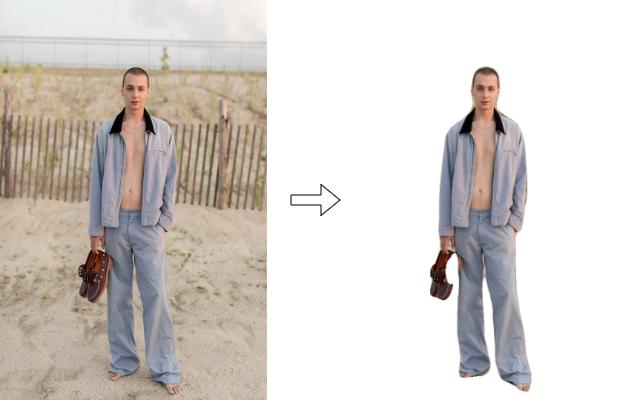

Nowadays, people are purchasing most of their items online and are spending more on it especially in fashion items since browsing different styles and categories of clothes is easy with just a few mouse clicks. Despite the convenience that online shopping provides, customers tend to concern about how a particular fashion item image on the website would fit with themselves. Therefore, there is an urgent demand to provide a quick and simple solution for virtual try-on. Instead of using 3D information such as depth of the image, we believe simply rely on the regular 2D photo is the most convenient way to satisfy this need. With the recent progress in virtual try-on technologies, people can have a better online shopping experience by accurately envisioning themselves wearing the clothes from online categories. Furthermore, virtual try-on technologies not only have demand in online shopping but also in physical shopping. In other words, with the try-on technologies developed on mobile application, customers can save their time of going into the fitting room.
In this project, we investigate the evolution of the virtual try-on systems using images of clothes on the Internet and photos of models from e-commerce websites. There are two stages of the development for our project. First, to prepare input image for the network in the second stage, we investigated computer vision techniques that we have learned in class such as image stitching, background removal, and object detection. In the second stage, we developed framework that implements recent deep learning techniques in virtual try-on applications. For example, using generative adversarial nets (GAN) (Goodfellow et al. 2014) as a generative machine learning model to synthesize virtual image of the model wearing unseen clothes. As a deliverable, we developed a web service add link to the web app based upon current state-of-the-art virtual-try-on architecture, CP-VTON (Wang et al. 2018), which is published in ECCV 2018.
Seminal work on virtual fitting with traditional computer vision techniques is DRAPE (Guan et al. 2012). DRAPE model is trained with meshes of pose of person and shapes of clothes. They utilized shape deformation gradients, a linear transformation function that aims to align triangles from source and target mesh, to represent deformation between meshes. DRAPE applied the process of deformation due to body shape, rigid part rotation, and body pose. Recent advances in machine learning, in particular, deep neural networks forwards the performance of virtual try-on systems significantly. In our study, we did not investigate DARPE since DARPE requires 3D meshes whereas we decided to focus on techniques for 2D image in this project. Instead, we found a project named E-dressing (described below) in the public domain which relies on traditional machine learning techniques to implement virtual fitting room.
We investigated E-Dressing2 which is a system that uses traditional machine learning methods, in particular, an ensemble of regression trees (Kazemi and Sullivan 2014), to perform the tasks of virtual try-on. However, after experimenting with the system and running author-provided demos, we would argue that E-Dressing is limited to try-on of items on faces. For example, glasses and earrings. Although this does not align with our original plan of the project, we see the possibility of integrating this feature into our final system to have a full-body try-on feature since CP-VTON (as described below) only support try-on of shirts.
In order to gather data for training and evaluation purposes, we have implemented a scraper to scrape clothes images from E-Commerce websites.
We used Scrapy with Python and implemented a website crawler and scraper. In particular, we targeted the E-Commerce website https://uniqlo.com and scraped for their women’s T-shirt images. We report two technical challenges we faced while developing the web scraper.
First, in the image dataset we scraped, it does not only contain cloth-only images. Instead, there are images that contained model or images that focus on different details of clothes. Since our framework requires images that only contain clothes as input, we currently manually select desired image from the image dataset returned from the web scraper. As a future plan, we can incorporate exiting image classification techniques to replace this manual effort.
Second, most clothes images comes with background, and for our model we need the background-removed image with a binary mask. Therefore, we investigated and implementing several background-removal techniques as described below.
In order to remove background from images, we investigated both traditional-CV methods and machine-learning methods. We found out that although machine-learning methods generally performs better results, it only works well on the same subject when it was trained. For example, a library we tested3 which uses 100 layers of Tiramisu DensNet trained on images with person works well on removing background from images that contain one person, but performs terribly on even really easy t-shirt-only images (Figure 2).

Next we tried using traditional-CV methods for image background removal. Specifically, we tried using Canny edge detection algorithm and Otsu’s thresholding algorithm, using OpenCV. The main problem is that although this works reasonably well on some easy cases (clean monotonic background with contrasted-colored t-shirt), it is hard to tune the thresholds for every kind of t-shirt to have clean results.
We have created a simple web page (online demo4) using OpenCV.js, in order to visualize the effect of tuning Brightness/Contrast together with comparing two algorithms mentioned above, and to visually check each steps output to further improve the algorithm pipelines. On this web page, we can test out different clothes and change their brightness/contrast and toggle pipeline such as morphing steps to see how they affect the generated contours and masks. The screenshot result for the same easy t-shirt-only is shown in Figure 3.
We reimplemented the network described in Toward characteristic-preserving image-based virtual try-on network (Wang et al. 2018) using the same dataset and model settings.
For the dataset, we use the same data provided by original VITON & CP-VTON,5 which use OpenPose(Cao et al. 2018) for JSON format pose information, and LIP_JPPNet (Liang et al. 2018) for model image segmentation.
In CP-VTON, the author use a two-stage solution to deal with the virtual try-on problem. First, it learns a transformation
for transforming the clothes into fitting the body shape of the target person via a new Geometric Matching
Module (GMM). Second, to mitigate edge artifacts of warped clothes and make the results more realistic, CP-VTON
applies a Try-On Module (TOM) that learns a combination mask to integrate the warped clothes and the rendered
image to ensure smoothness.
Geometric Matching Module (GMM)
input: Person Representation p (Keypoints + Segmentation + Human Model Image) + Cloth c
output: Warped Clothes c′
loss function: L1 loss
Try-On Module (TOM)
input: Person Representation p (Keypoints + Segmentation + Human Model Image) + Warped Clothes c′ (generated by GMM)
output: Human Model with warped cloth
loss function: L1 + LVGG loss

We use provided dataset to evaluate the model result in Figure 6. Furthermore, we use our own data to see the model effect in Figure 8. In particular, the cloth images here are the ones we obtained from our web scraper.
We can see better try-on results in the provided dataset compared to using our dataset. We guess it is due to difference between the distribution of the train data and test data. Since we crawl our dataset on the Internet and doing minor preprocess (crop and resize), many aspects can affect the original model inference such as image quality, background removal, cloth texture varies in brands and so on. Moreover, we notice that there’s a limitation using CP-VTON. That is, it will transfer Human Model’s pants into different texture or even color.
To wrap up our project, we dockerize each module (openpose, LIP_JPPNet, cp-vton, Background-Removal) and deploy a demo website on Google Cloud Platform using both Cloud Function and Cloud Run. In the website, users can upload whatever cloth and model image they want, then our backend will parse those input and feed into our BadgerFIT pipeline. Finally, the virtual try-on result will show as well as the intermediate result such as image segmentation, image keypoints on the website.
Cao, Zhe, Gines Hidalgo, Tomas Simon, Shih-En Wei, and Yaser Sheikh. 2018. “OpenPose: Realtime Multi-Person 2D Pose Estimation Using Part Affinity Fields.” In ArXiv Preprint arXiv:1812.08008.
Goodfellow, Ian, Jean Pouget-Abadie, Mehdi Mirza, Bing Xu, David Warde-Farley, Sherjil Ozair, Aaron Courville, and Yoshua Bengio. 2014. “Generative Adversarial Nets.” In Advances in Neural Information Processing Systems, 2672–80.
Guan, Peng, Loretta Reiss, David A Hirshberg, Alexander Weiss, and Michael J Black. 2012. “Drape: Dressing Any Person.” ACM Transactions on Graphics (TOG) 31 (4): 1–10.
Han, Xintong, Xiaojun Hu, Weilin Huang, and Matthew R Scott. 2019. “Clothflow: A Flow-Based Model for Clothed Person Generation.” In Proceedings of the Ieee International Conference on Computer Vision, 10471–80.
Han, Xintong, Zuxuan Wu, Zhe Wu, Ruichi Yu, and Larry S Davis. 2018. “Viton: An Image-Based Virtual Try-on Network.” In Proceedings of the Ieee Conference on Computer Vision and Pattern Recognition, 7543–52.
Kazemi, Vahid, and Josephine Sullivan. 2014. “One Millisecond Face Alignment with an Ensemble of Regression Trees.” In Proceedings of the Ieee Conference on Computer Vision and Pattern Recognition, 1867–74.
Liang, Xiaodan, Ke Gong, Xiaohui Shen, and Liang Lin. 2018. “Look into Person: Joint Body Parsing & Pose Estimation Network and a New Benchmark.” IEEE Transactions on Pattern Analysis and Machine Intelligence.
Wang, Bochao, et al. Toward characteristic-preserving image-based virtual try-on network. In: Proceedings of the European Conference on Computer Vision (ECCV). 2018. p. 589-604.
“Our Opencv Image Background Removal Experiment Website.” n.d. https://opencv-js-background-removal.netlify.com/.
“Virtual Dressing Room.” 2013. https://tinyurl.com/rwmzpsm.